|
 |
 |
Puntos de
Inflexión Ecológica
- Cómo funcionan?
- Transformando círculos viciosos a círculos virtuosos
- Ingredientes para el éxito
- Elaboren sus propios Puntos de Inflexión Ecológica
Historias por Región
Historias por Tema
- Agricultura
- Agua y Cuencas
- Bosques
- Ecosistemas Urbanos
- Educación
- Energía
- Negocios
- Pesquerías
- Salud Pública
Videos Cortos
- Salvando un arrecife coral y una pesquería
(Filipinas) - Revitalizando vecindades urbanas con jardines comunitarios
(Nueva York) - Revirtiendo la deforestación tropical con bosques comunitarios
(Thailandia) - Rellenando aguas subterráneas con captación pluvial
(Rajastán, India) - Escapando la trampa de pesticidas
(India)
Explicando el Éxito
- Salvando un arrecife coral y una pesquería
(Filipinas) - Revitalizando vecindades urbanas con jardines comunitarios
(Nueva York) - Revirtiendo la deforestación tropical con bosques comunitarios
(Thailandia) - Rellenando aguas subterráneas con captación pluvial
(Rajastán, India) - Escapando la trampa de pesticidas
(India)

Ecología Humana: Presenta los principios de la ecología humana que sirven de fundamento a los Puntos de Inflexión Ecológica
Explicando Exito
Los Guerreros del Agua: Captación Pluvial para Recargar el Manto Acuífero en Rajastán, India
- Preparado por Gerry Marten y Julie Marten
- Traducción a Español por David Nuñez y Gerry Marten
- Regrese a la página inicial de Explicando el Éxito
Contenido de la Página
- Procedimiento recomendado (Plan de Estudios)
- Narrativa (Versión Corta)
- Narrativa (Versión Larga con Fotos)
- Ingredientes para el Éxito (Versión Corta)
- Ingredientes para el Éxito (Versión Larga)
- Ingredientes para el Éxito (Ejercicios para Estudiantes)
- Ingredientes para el Éxito (para Maestros)
- Diagramas de Retroalimentación (Ejercicios para Estudiantes)
- Diagramas de Retroalimentación (para Maestros)
- PowerPoint de los Ingredientes para el Éxito (Vista previa y Descarga)
- PowerPoint para Estudiantes con Fotos (Vista previa y Descarga)
- Breve Video (Vista previa y Descarga)
Descargue todos los materiales en ésta página
(Archivos Editables de Microsoft Word y PowerPoint - ZIP 9MB)
1. Procedimiento recomendado para “Explicando el Éxito” (Plan de Estudio)
El Plan de Estudios a continuación sugiere como enseñar las historias exitosas de manera individual. Sin embargo, la lección puede modificarse fácilmente para enseñar las historias de manera conjunta. Por ejemplo, la clase se puede dividir en grupos, cada uno responsable de identificar los ingredientes para el éxito de una historia distinta, y de compartirlos con el resto de su clase con la presentación PowerPoint. O bien, cada historia puede ser utilizada para introducir lecciones sobre distintos problemas ambientales.
1er Paso: Pida a sus estudiantes que escriban un ensayo con las siguientes indicaciones:
“Piensa en un momento en que algo importante para ti, o para tu familia, estuvo en riesgo (por ejemplo, una amistad, un proyecto, una clase, un empleo...). ¿Qué se hizo para remediar la situación? ¿Funcionó? ¿Cómo? ¿O porqué no funciono? ¿Pudo haberse hecho algo distinto que quizá hubiera funcionado mejor?”
2o Paso: Después que sus estudiantes hayan escrito y compartido sus ensayos con la clase, introduzca el tema de comunidades en deterioro, en riesgo de desmoronarse, debido a su relación con el medio ambiente. Explique como estas comunidades deben cambiar para lograr mantenerse, sabiendo que el cambio no es sencillo. Explique a sus estudiantes que utilizarán la experiencia de una comunidad exitosa para comprender los “ingredientes clave” para el éxito de comunidades que logran revertir su deterioro y lograr la sustentabilidad.
3er Paso: Muestre un breve video de una de las historias exitosas para rápidamente introducir los conceptos de los Puntos de Inflexión Ecológica. El video para el caso de la Isla Apo es un buen comienzo. Es una historia convincente que de manera sencilla revela los conceptos básicos. Una vez terminado el video explique a sus estudiantes que ahora que entienden lo que es un Punto de Inflexión Ecológica, examinarán en detalle un caso exitoso para identificar los ingredientes para el éxito en dicha historia y determinar cómo se revirtió el deterioro.
4o Paso: Reparta copias de los Ingredientes para el Éxito y repase el significado de cada ingrediente. Hay dos versiones disponibles, según el nivel de su clase: la versión corta y la versión larga. Al repasar cada ingrediente, puede ser útil pedir a sus estudiantes que compartan ejemplos de la vida real. Esto les ayudará después cuando tengan que identificar los ingredientes de los casos de estudio.
5o Paso: Reparta la Narrativa para la historia seleccionada y los Ejercicios para dicha historia. La Narrativa está disponible a dos niveles: una versión corta y una versión larga, dependiendo del nivel de su clase. Los Ejercicios incluyen una sección de vocabulario. Repase el vocabulario para mejorar la comprensión de sus estudiantes e introducir conceptos básicos de la ecología humana. Puede ser útil pedirles que subrayen las palabras del vocabulario cuando las lean. El vocabulario también es útil a la hora de hacer la evaluación.
6o Paso: Ya sea de manera individual, o en grupos, pida a sus estudiantes que lean la historia y la reseñen en sus Ejercicios sobre Ingredientes para el Éxito, listando ejemplos de eventos, acciones o condiciones bajo cada ingrediente.
7o Paso: Una vez completado su trabajo, el maestro puede repasar la presentación PowerPoint de los Ingredientes con toda la clase. La presentación contiene viñetas que pueden utilizarse tal cual o ser modificadas según requieran. Cada diapositiva contiene fotografías que ayudan a ilustrar la información. Además hay notas adicionales con antecedentes para los instructores en la sección de notas de cada diapositiva o bien en la los Ingredientes para el Éxito (para Maestros). Si prefiere utilizar una presentación PowerPoint sin notas en las diapositivas como punto de partida, se puede utilizar el PowerPoint para Estudiantes (con explicación de fotos, pero sin viñetas). Si desea continuar con los diagramas de retroalimentación (círculos viciosos y virtuosos) para estos casos, continúe con los pasos 8 y 9. Estos diagramas parecen complicados al principio, pero pronto los entienden estudiantes de todas las edades.
8o Paso: Una vez que los estudiantes hayan visto el éxito, reparta los Ejercicios con Diagramas de Retroalimentación de los círculos viciosos y virtuosos para esta historia. Explique los siguientes conceptos:
- Inflexión Negativa - El deterioro en espiral descendiente.
- Punto de Inflexión Negativa - La acción o evento que detona la inflexión negativa.
- Inflexión Positiva - La espiral ascendiente de restauración y sustentabilidad.
- Punto de Inflexión Positiva (o Punto de Inflexión Ecológica) - La acción que detona la inflexión positiva revirtiendo el deterioro.
Pida a los estudiantes que regresen a su narrativa de la historia y marquen los puntos de inflexión tanto negativa como positiva. Si vieron el video, ya habrán anticipado este concepto.
9o Paso: Utilice los Ejercicios con Diagramas de Retroalimentación para describir los círculos viciosos que son el motor de la inflexión negativa y los círculos virtuosos que generan la inflexión positiva. También hay Diagramas de Retroalimentación para Maestros. Llenen el diagrama de la inflexión negativa juntos, trazando flechas entre cuadros y escribiendo la palabra faltante (mayor o menor, más o menos) y luego pida a sus estudiantes que llenen el diagrama de la inflexión positiva por su cuenta. Cuando los estudiantes comparen sus “inflexiones negativas” con las “inflexiones positivas” descubrirán que:
- una sección del diagrama de la “inflexión positiva” es idéntica al de la “inflexión negativa”, pero que el cambio es en sentido contrario (es decir, los círculos viciosos se transforman en virtuosos); y
- el resto del diagrama de la “inflexión positiva” consiste de nuevos círculos virtuosos creados por el punto de inflexión positiva. Estos nuevos círculos virtuosos amarran los logros obtenidos.
Al principio los diagramas parecen complicados, ya que no estamos acostumbrados a pensar en causa y efecto de manera cíclica. Pero una vez que se les explica el primero, la mayoría de los estudiantes no tienen mayor dificultad en comprenderlos. Este diagrama simplemente es cíclico en vez de lineal. Los estudiantes deben comprender que no se espera que produzcan diagramas idénticos al del Maestro. Mientras que la mayoría de las flechas son obvias, otras están sujetas a interpretación.
10o Paso: Siga el mismo procedimiento para los demás casos, o permita que sus estudiantes exploren los casos de manera independiente con la Presentación PowerPoint para Estudiantes. Para cada una de nuestras historias tenemos una presentación PowerPoint editable con fotos del caso. Estas Presentaciones para Estudiantes no contienen viñetas ni texto alguno en las diapositivas, sin embargo en las notas de cada diapositiva hay una breve explicación de la foto y su lugar en la historia. Los estudiantes pueden utilizar estos archivos para desarrollar su propia presentación para enseñar el caso a los demás estudiantes o cualquier otro fin de acuerdo a las metas para la clase. Las notas de las diapositivas pueden servir de guía para que los estudiantes investiguen el video de ese caso, sus “Ingredientes para el Éxito”, los diagramas de retroalimentación, y las narrativas. Las Presentaciones PowerPoint para Estudiantes pueden ser utilizadas a cualquier nivel para que los estudiantes exploren y enseñen un caso exitoso dentro de los parámetros de su grado, y de las metas del instructor.
2. Narrativa (Versión Corta)
Los Guerreros del Agua: Captación Pluvial en Rajastán para Recargar el Manto Acuífero
En el Rajastán de la India el agua siempre ha sido escasa y la lluvia cae principalmente durante la temporada de monzones (de Julio a Septiembre). Pero a lo largo de milenios los campesinos han captado la lluvia para aprovechar al máximo cada gota. Construyeron y mantuvieron presas de tierra llamadas johad para atrapar las lluvias del monzón. El agua de estos estanques se filtra hacia el manto acuífero donde queda protegido del fuerte sol que de lo contrario evaporaría el agua. Las aguas subterráneas recargan ríos y manantiales, brindando suficiente del preciado liquido durante todo el año para las aldeas, los animales y los cultivos como el trigo, frijoles y mostaza.
Este frágil equilibrio fue perturbado durante los 1940s, cuando la tala comercial puso en marcha una reacción en cadena. Las lluvias del monzón arrastraron la tierra de las laderas deforestadas, depositándola en los estanques de los johad, reduciendo su capacidad de captación y filtración de agua al subsuelo. El manto acuífero comenzó a retirarse y los aldeanos respondieron construyendo pozos con la nueva tecnología perforadora y utilizando bombas para traer el agua a la superficie. Si el pozo no tenía suficiente agua, perforaban a mayor profundidad. Dejaron de darle mantenimiento a los johad, que eventualmente se llenaron de sedimento.
Sin embargo con el tiempo el agua subterránea comenzó a escasear. Secaron arroyos y manantiales, y la gente cayó en un círculo vicioso de perforar pozos cada vez más profundos, bombear toda el agua posible, y agotar el manto acuífero aún más. Pronto secaron todos los manantiales en una región de varios kilómetros cuadrados. Los árboles que proveían de leña a los poblados desaparecieron, pues dependían del agua subterránea. Disminuyeron las manadas de ganado y la fauna silvestre, como el antílope y el leopardo, desaparecieron. Los pozos dejaron de producir suficiente agua para la agricultura y los hombres comenzaron a migrar a las ciudades en busca de trabajo con que mantener a sus familias. Las mujeres y niños tuvieron que caminar hasta 10 horas al día para obtener leña y agua para el hogar. Con la desintegración social desapareció la voluntad y la mano de obra necesaria para mantener los johad restantes, que se llenaron de sedimento.
El círculo vicioso comenzó a revertirse en 1985 cuando una organización llamada Tarun Bharat Sangh (TBS) y dedicada a erradicar la pobreza, arribó a la aldea de Gopalpura con la intención de construir una clínica pero pronto se dio cuenta de que la necesidad más urgente era de agua. Los ancianos recordaban como construir y mantener los johad, y siguiendo su consejo TBS y algunos aldeanos comenzaron a remover el sedimento de un johad. Tardaron siete meses en reconstruir ese johad, pero cuando llegaron las lluvias del monzón, se formó un estanque tras la presa y a los pocos meses un manantial seco comenzó a dar agua otra vez.
Gopalpura resucitó su tradicional consejo, que había caído en el olvido en años previos. Cada familia del pueblo participó en las decisiones comunitarias a través del consenso. El consejo se unió tras la gestión del agua, y durante el siguiente año toda la aldea participó en la reconstrucción de una segunda represa. Construyeron más durante los siguientes años y para 1996 tenían 9 johad con capacidad de 613 millones de litros de agua. Cada pozo en el pueblo estaba lleno, aun durante la temporada de sequía.
El orgullo comunitario en éste éxito se convirtió en un símbolo de la capacidad de la comunidad de elegir su destino. Le dio al consejo las agallas para intentar revivir y gestionar su bosque también. Los aldeanos reforestaron e implementaron medidas estrictas de conservación. Para recalcar su compromiso con los árboles, los aldeanos ataron coloridos rachis, brazaletes de parentesco, alrededor de los troncos, como símbolo de protección familiar. Las familias podían cortar ramas muertas, pero eran multadas por cortar ramas vivas para leña. La reforestación protegió la cuenca, reduciendo la erosión y la sedimentación dentro de los johad. Esto facilitó el mantenimiento de los johad y contribuyó aún más a la recarga del manto acuífero.
Los resultados de la gestión del agua y el bosque fueron dramáticos. Pudieron irrigar sus cultivos y volver a criar ganado. Regresaron los ríos y la fauna silvestre. Con suficiente agua para la agricultura, regresaron los hombres al campo, fortaleciendo a la comunidad y brindando más mano de obra para la construcción y mantenimiento de los johad. Con amplio abasto de agua, los agricultores pudieron diversificar sus cultivos con caña de azúcar, papas y cebollas, entre otros. Y con la cercanía del agua y la leña, las mujeres pudieron dedicarse de nuevo al hogar, e inspiradas por los cambios positivos comenzaron cooperativas para vender lácteos, artesanías y jabón. Los niños pudieron regresar a la escuela.
El éxito resucitando los johad en Gopalpura inspiro a otros poblados a hacer lo mismo. Con apoyo de ingeniería y organización de TBS más de 750 aldeas han seguido el ejemplo de regresar a la tradicional captación pluvial, utilizando su propia mano de obra y recursos. Estos poblados enfrentaron nuevos retos a su dedicación. El gobierno intentó vender los derechos de pesca sobre los ríos rescatados, la minería clandestina contaminó sus aguas, y el gobierno intentó destruir algunas de sus represas porque infringían sobre la soberanía gubernamental sobre el agua. En respuesta los aldeanos se organizaron como “Los Guerreros del Agua del Rajastán” y convirtieron su orgullo en la solidaridad necesaria para defender sus logros con protestas, demandas y otras acciones pacíficas. Y tuvieron éxito. Los aldeanos del Rajastán descubrieron que tenían porqué ser víctimas del colapso, sino que la comunidad podía decidirse por un rumbo positivo.
Descargue todos los materiales en ésta página
(Archivos Editables de Microsoft Word y PowerPoint - ZIP 9MB)
3. Narrativa (Versión Larga con Fotos)
Los Guerreros del Agua: Captación Pluvial en Rajastán para Recargar el Manto Acuífero
- Autor: Gerry Marten
- Pulse aquí para ver el documento original sobre el cual está basado éste artículo.
Los pozos del Distrito Alwar en Rajastán se habían secado, hundiendo a la población en una pobreza aparentemente sin escape. El rescate de represas tradicionales para capturar lluvia y recargar el manto acuífero fue el punto de inflexión que resucitó a los pozos y manantiales. Y con el agua llegó una mejor vida para la población. Todo comenzó en la humilde aldea de Gopalpura. Ahora cerca de mil aldeas siguen su ejemplo.
El agua siempre ha escaseado en el distrito Alwar del Rajastán, en la India. Caen apenas 40 centímetros de lluvia cada año, la mayoría durante los tres meses del monzón (de Julio a Septiembre), dejando la tierra sedienta durante el resto del año. Pero a lo largo de miles de años los agricultores aprendieron como aprovechar cada gota al máximo. Los antiguos textos Hindúes mencionan la tecnología clave para gestionar el agua: la captación pluvial. A lo largo y ancho de toda la India se construyeron estructuras para captar y retener las lluvias del monzón y almacenarlas para la época de sequía. Los arqueólogos dicen que algunas de estas estructuras datan del 1500 A.C.
En el Rajastán, la estructura dominante era el johad, una presa de tierra y piedras con forma de media luna para interceptar el agua de lluvia que bajaba de las laderas. El johad cumple dos funciones. En la superficie, almacena agua para el ganado. Pero al igual que un témpano de hielo, su mayor parte está bajo la superficie. Al retener agua, permite que el líquido se filtre por la tierra, recargando el manto acuífero a distancias de hasta un kilómetro de distancia del johad. Almacenada bajo tierra, el agua no se evapora. Sin tuberías ni canales, los aldeanos siempre podían depender de agua de sus pozos y manantiales. La irrigación hacía posible la agricultura durante todo el año.
Una familia no podía construir un johad. Pero ya que todos los aldeanos beneficiaban de ellos, se unían para construirlos y mantenerlos. Los rajas, reyes de pequeños estados quienes dieron su nombre a la región, frecuentemente financiaban su construcción a cambio de un pequeño porcentaje de las cosechas. Las instituciones comunitarias se extendían hacia otros recursos compartidos, como los árboles. Los aldeanos regulaban la tala de árboles para la leña.
Secando el Acuífero
Tras siglos de relativa estabilidad, el contrato social alrededor del agua y los árboles comenzó a erosionarse cuando Gran Bretaña consolidó su control sobre la India a finales del siglo XIX. Las empresas Británicas necesitaban maderas, y demasiados rajas estaba dispuestos a dárselas. Primero prohibieron el acceso a los bosques a los aldeanos que durante generaciones habían cuidado de ellos. Después vendieron los derechos de tala a las empresas. El distrito de Alwar mantuvo sus bosques hasta finales de los 1940s, cuando la India logro su independencia y el rajá vendió los derechos de tala a las empresas temeroso de que pudiera perder sus tierras al nuevo gobierno nacional. Los venerados árboles terminaron como carbón y durmientes.
Esta tala comercial puso en marcha una reacción en cadena en que la destrucción de un recurso llevo a la destrucción de otro, y el empobrecimiento de la naturaleza llevó al empobrecimiento de la población. Primero la tierra fue arrastrada de las laderas deforestadas y depositada en los johad. Antaño quizá la población hubiera mantenido y reconstruido sus represas. Pero al grado que el gobierno tomaba posesión de más y más de sus tierras comunes, tuvieron menos y menos incentivo para proteger lo que les quedaba. Los consejos tradicionales en que participaban todas las familias, llamados gram sabhas, cayeron en desuso y se perdió la tradición del trabajo comunitario. Donde antes los agricultores compartían la labor de gestionar sus recursos, ahora competían por los pocos que quedaban. “Tras la independencia se colapsó la solidaridad de la aldea, y la gente descuidó sus estructuras (johad), porque solo pueden construirse por grupos, no por individuos. Así, uno por uno, las estructuras deterioraron y dejaron de funcionar”, recuerda el anciano Mangu Patel.
Con menos johad con que recargar el acuífero, comenzaron a secarse los pozos. Pero el deterioro de los johad parecía ser inconsecuente una vez que se introdujo la tecnología de perforación y bombeo de agua en los 1950s. Si se agotaba un pozo al retirarse el manto acuífero, bastaba con perforar a mayor profundidad. Esto se lograba fácilmente con el equipo de perforación y requería mucho menos trabajo que mantener los johad removiendo la sedimentación.
El deterioro y pérdida de los johad fue acelerado por círculos viciosos. Se perforaba cada vez a mayor profundidad, extrayendo más agua. El manto acuífero cayó aún más, requiriendo de pozos cada vez más profundos. La caída del agua subterránea repercutió en la desaparición de árboles y vegetación cuyas raíces ya no alcanzaban el agua, acelerando la erosión y llenando los johad restantes con sedimento. Con menos plantas hubo menos transpiración vegetal, resultando en menos lluvias. La temporada del monzón se acortó, de 101 días en 1973 a 55 días en 1987. Eventualmente todos los pozos, e incluso algunos arroyos y ríos se secaron en un área de varios miles de kilómetros cuadrados. Disminuyó la ganadería y desapareció la fauna nativa característica de la región, tal como antílopes y leopardos.
Los pozos ya no permitían irrigar los cultivos durante la época de secas, y la agricultura se redujo a una sola cosecha por año, durante las lluvias. Los hombres migraron a las ciudades en busca del trabajo, reduciendo la mano de obra disponible para mantener los johad. Con los pozos secos y los árboles desaparecidos, las mujeres y niños tuvieron que caminar hasta 10 horas al día en busca de leña y agua, dejándoles poco tiempo para la educación o cualquier otra actividad.
Transformando el deterioro en restauración
Para 1985 ya no había johad en la aldea de Golpapura, cuando arribaron cinco jóvenes voluntarios de una organización llamada Tarun Bharat Sangh (TBS) dedicada a erradicar la pobreza. Uno de ellos, un médico de nombre Rajendra Singh, tenía esperanzas de abrir una clínica. Pero Mangu Patel le dijo que la necesidad más urgente era de agua. Siguiendo el consejo de Patel, Singh y sus colegas comenzaron a restaurar un viejo johad. Siete meses después, la fosa tras la presa tenía 5 metros de profundidad. Al llegar las lluvias no solo se llenó hasta el borde, sino que un manantial cercano que había secado hace tiempo comenzó a manar agua otra vez.
Al año siguiente todo el pueblo se unió para restaurar una dilapidada presa de 6 metros de altura y 400 metros de longitud. Aunque Golpapura ya tenía un consejo (pancaharat) bajo el moderno sistema político nacional, los aldeanos revivieron el tradicional consejo gram sabah para administrar la construcción y mantenimiento de los johad, porque la participación total de la ciudadanía del gram sabah se prestaba más a este propósito. La TBS ayudó a obtener la asistencia técnica necesaria, los aldeanos contribuyeron un total de 10,000 días de trabajo y los más ricos donaron alimentos para los trabajadores.
Para 1996 Golpapura había recreado nueve johad, con extensión de 964 hectáreas y capacidad de 616 millones de litros de agua. El manto acuífero subió de una profundidad promedio de 14 metros bajo tierra, a 6.7 metros. Los pozos se llenaron. “Es como un banco”, dice Rajendra Singh. “Si depositas de manera regular, siempre podrás hacer retiros. Pero si tan solo retiras, pronto agotarás la cuenta.” En los mapas del gobierno la zona cambió de color oscuro a blanco, indicando un excedente de agua subterránea.
La recuperación del manto acuífero repercutió en la economía local. Con mayor humedad en el subsuelo hizo falta menos irrigación. Porque el agua estaba a menor profundidad, se requirió menos combustible para las bombas, y este gasto disminuyó en un 75%. Las hectáreas de cultivo de trigo crecieron de 33 a 108, y algunos campesinos diversificaron con caña de azúcar, papas y cebollas. Regresaron aldeanos de las ciudades. Junto con las mejoras en la dieta humana, mejoró la del ganado. Había más hojarasca para los borregos, cabras y vacas, lo cual aumentó la producción de lácteos.
La restauración de los johad de Golpapura demuestra como la palanca adecuada- la acción catalítica indicada- puede transformar un círculo vicioso en uno “virtuoso”. Tras años de extraer demasiada agua del suelo, los campesinos comenzaron a regresarla. Los círculos virtuosos que siguieron fueron la inversa de los círculos viciosos previos:
- La resurrección de pozos y manantiales motivó a la construcción de más johad, reviviendo aún más pozos y manantiales.
- Al subir el manto acuífero pudo mantenerse la cubierta de árboles y vegetación que evitan la erosión, ayudando a proteger los johad de la sedimentación.
- Al regresar los emigrantes a las aldeas, hubo más mano de obra para construir y mantener nuevos johad.
- Los éxitos de la solidaridad fortalecieron las instituciones sociales, inspirando más acciones comunitarias.
Beneficios derivados que amarran el éxito
Con la cercanía del agua y la leña, las mujeres tuvieron tiempo para organizar cooperativas de productos lácteos, artesanías y jabones. Los niños pudieron regresar a la escuela. “Ahora tenemos dos escuelas,” dice la anciana Manbhar Devi del pueblo vecino de Bhaonta-Kolyala, “para niños pequeños y mayores. En ese entonces (previo a la captación pluvial), ni una sola niña iba a la escuela. Sus padres no lo permitían. Ahora todas las familias envían tanto a niños como a niñas a la escuela, y por lo menos pueden terminar la primaria aquí en la aldea.”
Motivados por su éxito, el consejo gram sabha decidió reforestar 10 hectáreas a orillas del pueblo de Golpapura e implementaron medidas estrictas para su uso. Las familias podían cortar ramas secas para leña, pero eran multadas si cortaban ramas aún verdes. Para recalcar su compromiso con los árboles, los residentes ataron rakhis, brazaletes de parentesco, alrededor de los troncos, como símbolo de protección familiar.
Testigos del renacimiento de Gopalpura, otras aldeas buscaron el apoyo de TBS para restaurar sus propias estructuras de captación pluvial. TBS brindó asistencia técnica y de organización, pero tan solo después de celebrar un contrato estricto con cada aldea respecto al dinero y la mano de obra que los residentes aportarían al proyecto para garantizar su éxito. Para el 2005 había más de 5,000 johad en 750 aldeas, en un área de 8,000 kilómetros cuadrados. Un sondeo de 970 manantiales mostró que todos tenían agua- incluso 800 que tan solo 6 años antes estaban secos. La cubierta forestal del distrito de Alwar creció 33% en 15 años, se rescataron 5 ríos que habían secado, resucitando al mismo tiempo el hábitat de fauna rara vez vista, como los leopardos y antílopes.
Pero lo más importante es que los campesinos de Alwar se organizaron para proteger sus logros. Dado que el agua subterránea y los bosques de la India están bajo el control de las autoridades estatales y nacionales, TBS y los líderes de las aldeas fueron amenazados con prisión por “tomar la ley en sus manos” con sus programas de gestión de agua y bosques. Pero los aldeanos perseveraron. Cuando las autoridades estatales intentaron tallar bosques o destruir sus johad para demostrar su poderío, los aldeanos los obligaron a ceder, a veces con plantones en el sitio. Cuando el gobierno vendió los derechos de pesca comercial al rescatado rio Arvari, 70 aldeas se organizaron para devolverle estos derechos al pueblo. Los residentes de la Reserva del Tigre de Sariska demandaron exitosamente para expulsar a la “mafia del mármol”, cuyas minas clandestinas agotaban y contaminaban sus aguas.
Maulik Sisotia, voluntario del TBS, resumió como la auténtica participación ciudadana puede impulsar la restauración ambiental y social de manera realmente sustentable: “La gente siente “Hemos dado nuestro trabajo, es nuestro.” Así que lo mantienen de manera regular, y tienen un sentido de propiedad. Es natural. Si participas en algo, lo cuidas para que no sea dañado.”
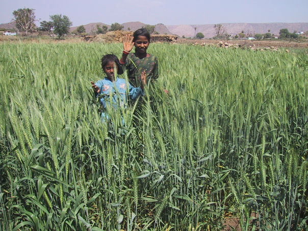
Cultivo de trigo irrigado durante la temporada seca.

Cultivo de mostaza (importante cultivo comercial) irrigado durante la temporada seca.

Cargando leña para la cocina.

Transporte local.
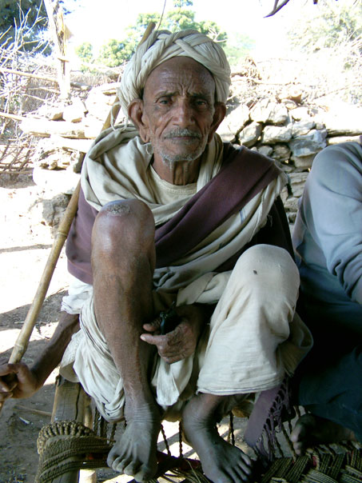
Un anciano que aconsejó la reconstrucción de los johad en Gopalpura.
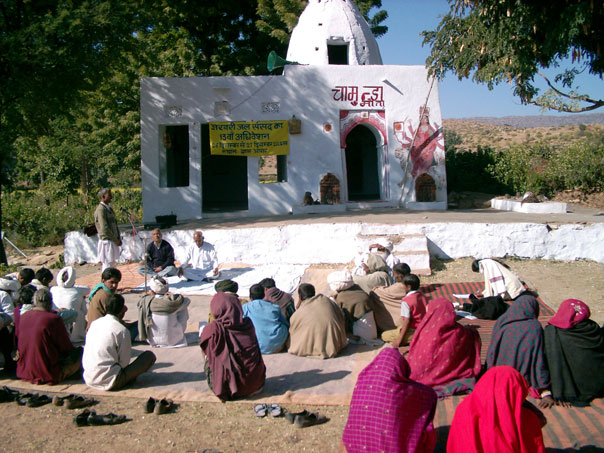
Reunión del gram sabah (consejo tradicional).
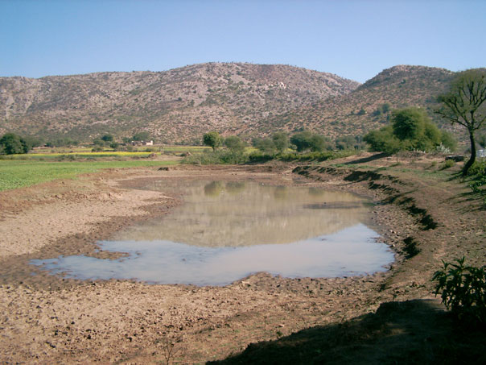
Un johad en Golpapura, con parte del bosque comunitario en el fondo.

Un pozo en Gopalpura brinda agua para irrigación, ganado y el lavado de ropa.

Un pozo brinda agua potable, para bañarse, lavar ropa, e irrigación.

Un pozo brinda agua que beber para gente y ganado.

Llevando agua a casa desde un pozo cercano.
4. Notas de Ingredientes para el Éxito (Versión Corta)
- Conciencia compartida y compromiso comunitario. Sólidas instituciones democráticas y auténtica participación comunitaria son importantes en las historias de Puntos de Inflexión Ecológica. De particular importancia es una comprensión compartida sobre las causas del problema y cómo enfrentarlo. La comunidad avanza en base a sus propias decisiones, mano de obra y recursos financieros. Así, todos se sienten dueños de la acción comunitaria.
- La estimulación y facilitación exterior. Los foráneos pueden ser una fuente de nuevas ideas y de aliento. Una historia exitosa típicamente comienza cuando gente o información de fuera aportan a la comunidad un nuevo entendimiento del problema y brindan ideas transformadoras sobre cómo enfrentarlo.
- Compromiso duradero por parte del liderazgo local. La persistencia por parte de líderes de confianza inspira y arraiga el compromiso y participación por parte de la comunidad, tan necesarios para revertir los círculos viciosos del deterioro.
- La coadaptación entre el sistema social y el ecosistema. El sistema social y el ecosistema encajan entre sí, funcionando como un conjunto sustentable. Cuando uno gana, también lo hace el otro.
- "Permitir que la naturaleza haga el trabajo." Los Puntos de Inflexión Ecológica crean condiciones para que el ecosistema se reponga por su cuenta, aprovechando los poderes de curación de la naturaleza.
- Los resultados rápidos y símbolos poderosos. Los beneficios tempraneros y algo que sirva como símbolo del éxito ayudan a las comunidades a mantener su compromiso con el cambio.
- La superación de Obstáculos Sociales. La superación de obstáculos sociales, políticos y económicos que podrían bloquear el cambio positivo.
- La diversidad social y ecológica. La mayor diversidad de gente, ideas, experiencias y elementos de la naturaleza permiten mayores opciones y oportunidades, y por lo tanto mejores posibilidades de que se tomen algunas decisiones que sean buenas.
- La memoria Social y Ambiental. El aprender del pasado aumenta la diversidad, y frecuentemente apunta hacia las opciones que alguna vez fueron sustentables. La naturaleza tiene esta memoria a nivel evolutivo.
- Construyendo resiliencia. La sustentabilidad se "amarra" al fomentar la habilidad de adaptarse y enfrentar condiciones nuevas (e inesperadas) que amenacen la sustentabilidad.
Vocabulario
- Estímulo: Fomentar actividad o crecimiento.
- Sistema Social: Todo lo que implica una sociedad humana, incluyendo su organización, conocimientos, tecnología, idioma, cultura y valores.
- Ecosistema: Todos los seres vivos (flora, fauna y microorganismos) y su ambiente en un lugar determinado.
- Restauración: El regreso de algo a su condición intacta original.
- Facilitación: Asistir en hacer más sencillo algo o en hacerlo exitoso.
- Institución: Un patrón establecido de comportamientos o relaciones dentro de una sociedad.
- Co-adaptación: Dos o más cosas se ajustan una a otra para encajar y funcionar bien.
- Obstáculos: La gente, cosas o eventos que nos obstruyen.
- Diversidad: Variedad (muchas cosas distintas entre si).
- Resiliencia: La habilidad para regresar a un estado original tras perturbaciones severas.
Descargue todos los materiales en ésta página
(Archivos Editables de Microsoft Word y PowerPoint - ZIP 9MB)
5. Notas de Ingredientes para el Éxito (Versión Larga)
¿Qué se necesita para revertir los círculos viciosos que promueven el deterioro ambiental? Básicamente requiere de una tecnología ambientalmente adecuada combinada con la organización social para implementarla efectivamente. Específicamente nuestros casos de estudio han demostrado consistentemente que los siguientes ingredientes son la clave del éxito.
- Conciencia compartida y compromiso comunitario. Sólidas instituciones democráticas y auténtica participación comunitaria son importantes en las historias de Puntos de Inflexión Ecológica. Estas historias por lo general no reflejan reglamentos impuestos por una autoridad lejana, ni complicados planes de desarrollo con metas poco realistas. De particular importancia es una comprensión compartida sobre las causas del problema y cómo enfrentarlo. Es decir, que existe un acuerdo común sobre el porqué del problema, lo que se puede hacer al respecto, así como una responsabilidad compartida de las acciones que tome la comunidad. La misma comunidad desarrolla un procedimiento eficaz para hacer realidad este acuerdo común. Utilizando su experiencia colectiva, la comunidad avanza en base a sus propias decisiones, mano de obra y recursos financieros.
- Estímulo y facilitación exterior. Raramente vemos Puntos de Inflexión Ecológica que surjan por sí solos. Los foráneos pueden ser una fuente de nuevas ideas y de aliento. Mientras es esencial la acción local, las historias de éxito típicamente comienzan cuando gente o información externa a la comunidad estimulan un nuevo entendimiento del problema y brindan ideas transformadoras sobre cómo enfrentarlo. Únicamente con programas que brinden este tipo de estímulo a comunidades locales podremos hacer más comunes las historias de éxito.
- Compromiso duradero por parte del liderazgo local. La persistencia es una llave del éxito. Revertir el deterioro en renovación no es fácil. Requiere de un sólido compromiso comunitario para aplicar la palanca de Inflexión Ecológica con suficiente fuerza para cambiar el sentido del círculo vicioso. La perseverancia por parte de líderes de confianza inspira y arraiga el compromiso y participación por parte de la comunidad, necesarios para lograr el éxito.
- La coadaptación entre el sistema social y el ecosistema. El sistema social y el ecosistema encajan entre sí, funcionando en conjunto. Al desenvolverse una historia de Punto de Inflexión, las percepciones, valores, conocimientos, tecnologías, organización e instituciones de una sociedad evolucionan para fortalecer la sustentabilidad de los recursos sociales y ambientales. Los logros sociales y ambientales van de la mano. Se desarrollan recursos sociales comunes para aprovechar los recursos ambientales comunes, entre estos la propiedad y sus límites, el acuerdo sobre reglamentos y la vigilancia.
- "Permitir que la naturaleza haga el trabajo." La fiscalización de los problemas ambientales mundiales excede la capacidad humana. Los Puntos de Inflexión Ecológica permiten que la naturaleza misma utilice sus poderes auto-organizadores para poner en marcha la restauración
- Resultados rápidos. Los resultados rápidos ayudan a asegurar el compromiso comunitario. Una vez que empiezan a verse los resultados positivos en el sistema social y el ecosistema, los procesos normales tanto sociales, económicos y políticos se encargan de lo demás.
- Un símbolo poderoso. Es común que un elemento vistoso del ambiente local – u otro aspecto sobresaliente en la historia de Punto de Inflexión – represente el proceso entero de manera que consolida el compromiso comunitario e inspira la mayor acción comunitaria para darle seguimiento.
- La superación de obstáculos sociales. El contexto socio-económico puede obstaculizar el éxito a escala local. Por ejemplo:
- Impone otras demandas que compiten por la atención, energía y tiempo de las personas. Están tan “ocupadas” que no tienen tiempo de aportar al “bien común”.
- Las personas que se sienten amenazadas por la innovación o el cambio toman medidas para contrarrestar el cambio.
- Una vez restaurado el recurso, foráneos intentan apropiarse de él.
- Una disfunción en el status quo impide que la gente haga los cambios necesarios para escapar del deterioro.
- La diversidad social y ambiental. A mayor diversidad, mayores opciones y oportunidades – y mayor posibilidad de que algunas de estas opciones sean buenas. Por ejemplo, la diversidad de especies de un ecosistema aumenta su capacidad para auto-restaurarse. La diversidad de percepciones, valores, conocimientos, tecnologías, organizaciones e instituciones brindan oportunidades para tomar mejores decisiones.
- La memoria social y ambiental. Las instituciones sociales, conocimientos y tecnologías del pasado que han sobrevivido pueden aportar al presente. La "memoria" de la naturaleza existe en la resiliencia de los seres vivos y sus relaciones intrínsecas con el ecosistema, las cuales han surgido de la evolución biológica a través de los tiempos.
- Construyendo resiliencia. La "resiliencia" es la habilidad para continuar funcionando de manera normal a pesar de perturbaciones severas ocasionales. Los Puntos de Inflexión Ecológica son más eficaces cuando además de poner en marcha la sustentabilidad, aumentan la resiliencia para resistir amenazas a dicha sustentabilidad. Al desarrollarse las historias de Puntos de Inflexión, surgen nuevos círculos virtuosos que fortalecen y consolidan los logros. La capacidad adaptativa de una comunidad – su apertura a cambios basados en una conciencia compartida, la experimentación prudente, el aprendizaje tanto de éxitos como fracasos, y la replicación de éxitos – es parte central de la resiliencia.
Vocabulario
- Estímulo: Fomentar actividad o crecimiento.
- Sistema Social: Todo lo que implica una sociedad humana, incluyendo su organización, conocimientos, tecnología, idioma, cultura y valores.
- Ecosistema: Todos los seres vivos (flora, fauna y microorganismos) y su ambiente en un lugar determinado.
- Restauración: El regreso de algo a su condición intacta original.
- Facilitación: Asistir en hacer más sencillo algo o en hacerlo exitoso.
- Institución: Un patrón establecido de comportamientos o relaciones dentro de una sociedad.
- Co-adaptación: Dos o más cosas se ajustan una a otra para encajar y funcionar bien.
- Obstáculos: La gente, cosas o eventos que nos obstruyen.
- Diversidad: Variedad (muchas cosas distintas entre si).
- Resiliencia: La habilidad para regresar a un estado original tras perturbaciones severas.
6. Ingredientes para el Éxito (Ejercicios para Estudiantes)
Instrucciones: Estos ejercicios le ayudarán a identificar los Ingredientes para el Éxito en situaciones verídicas. Primero, repase el Vocabulario requerido para esta historia de éxito. Después, lea la historia, subrayando las palabras del vocabulario. Finalmente, reseñe con viñetas los elementos de la historia que son ejemplos bajo cada ingrediente para el éxito. Por ejemplo, si alguien de otra ciudad introdujo un nuevo concepto o ayudó a iniciar el proyecto, menciónelo bajo el encabezado “estimulo y facilitación externa”. Sea lo más ESPECÍFICO posible. Debe tener por lo menos un ejemplo por cada ingrediente, aunque algunos pueden tener varios.
Vocabulario
- Monzón: Temporada de lluvias en el sur de Asia (típicamente de Junio o Julio hasta Septiembre).
- Manto Acuífero: Estrato subterráneo de arena, grava o piedra porosa que puede almacenar agua y permite su flujo.
- Aguas subterráneas: Agua en el acuífero, debajo de la superficie de la tierra. El agua llega allí mediante la filtración desde la superficie. Las aguas subterráneas son la fuente de manantiales y pozos.
- Presa o represa: Una barrera construida para bloquear el flujo de agua y aumentar el nivel de agua a sus espaldas.
- Evaporación: Transformación de un líquido a un gas. El agua almacenada en un estanque puede perderse por evaporación en un lugar cálido y seco como el Rajastán.
- Recargar: Volver a llenar.
- Consenso: Un acuerdo logrado por un grupo en su totalidad.
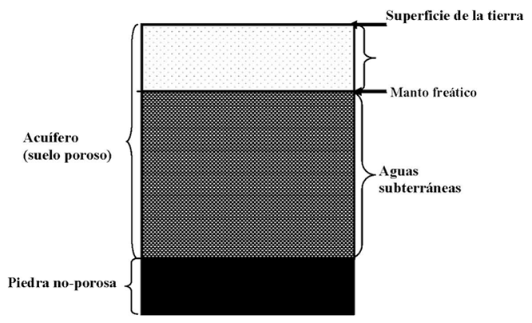
Respuestas de Estudiantes (Ejemplos de Ingredientes para el Éxito)
- Conciencia compartida y compromiso comunitario
- Estímulo y facilitación exterior
- Compromiso duradero por parte del liderazgo local
- Co-adaptación entre el sistema social y el ecosistema
- “Permitir que la naturaleza haga el trabajo.”
- Los resultados rápidos
- Símbolos poderosos.
- La superación de Obstáculos Sociales.
- La diversidad social y ecológica.
- La memoria Social y Ambiental.
- Construyendo resiliencia.
7. Ingredientes para el Éxito (para Maestros)
- Conciencia compartida y compromiso comunitario. Sólidas instituciones democráticas y auténtica participación comunitaria son importantes en las historias de Puntos de Inflexión Ecológica. De particular interés es la comprensión compartida de la problemática y como enfrentarla, así como la posesión comunitaria de las acciones resultantes. Las comunidades avanzan en base a sus propias decisiones, mano de obra y recursos financieros. Trabajando a cambio de comida, algunos aldeanos de Golpapura se unieron al equipo para restaurar el primer johad. Al año siguiente se restauró una presa más grande con el esfuerzo de aproximadamente 10,000 jornadas laborales por parte de residentes. Los consejos tradicionales (Gram Sabha), en que es representada cada familia y se logran acuerdos por consenso, fueron resucitados para administrar la construcción de las represas. Los Gram Sabha también iniciaron proyectos de reforestación comunitaria. Esta cooperación fortaleció la solidaridad, que a su vez fue crítica para la resistencia pacífica a los intentos gubernamentales por poner fin a los johads.
- Estímulo y facilitación exterior. Los foráneos pueden ser una fuente de nuevas ideas. Mientras es esencial la acción local, las historias de éxito típicamente comienzan cuando gente o información externa a la comunidad estimulan un nuevo entendimiento del problema y brindan ideas transformadoras sobre cómo enfrentarlo. Cinco jóvenes de la organización Tarun Bharat Sangh ("Grupo India Joven") arribaron a Gopalpura con la intención de establecer una clínica de salud. Se encontraron que había mayor necesidad de agua, y siguiendo el consejo de un anciano comenzaron la labor de restaurar las tradicionales presas de captación pluvial (johad) para reabastecer el manto acuífero. Contaron con el apoyo externo de ingenieros profesionistas.
- Compromiso duradero por parte del liderazgo local. La persistencia por parte de líderes de confianza inspira y arraiga el compromiso y participación por parte de la comunidad. Rajendra Singh, uno de los cinco jóvenes de Tarun Bharat Sangh, se mantuvo en el papel de líder. Gopalpura ha recibido a miles de visitantes con el objetivo de conocer de primer mano lo que se ha logrado y Tarun Bharat Sangh ha facilitado la construcción de johads en otras aldeas, insistiendo en rigurosos contratos que definen la contribución de recursos laborales y monetarios por parte de comunidades que solicitan el apoyo de Tarun Bharat Sangh.
- La coadaptación entre el sistema social y el ecosistema. El sistema social y el ecosistema encajan entre sí, funcionando en conjunto. Los efectos del renacimiento de la captación pluvial rebotaron entre el ecosistema y el sistema social una y otra vez, haciéndose más notables al ir sanando ambos sistemas. Los tradicionales consejos comunitarios Gram Sabha fueron capaces de gestionar esfuerzos comunales como los johad y bosques comunitarios con una efectividad que carecen los consejos convencionales (pancharat). Los jóvenes regresaron de las ciudades, prestando más mano de obra para la restauración de los johad. Los residentes organizaron la reforestación y la protección del bosque. Esta movilización de mano de obra rescató el sistema ambiental y el ecosistema respondió satisfaciendo las necesidades de la gente.
- "Permitir que la naturaleza haga el trabajo." Los Puntos de Inflexión Ecológica permiten que los poderes auto-organizadores de la naturaleza pongan en marcha la restauración. Una vez construidas las represas, solo quedaba esperar las lluvias. Se llenaron con agua de lluvia, la cual se filtró al subsuelo y volvió a brotar el agua de los manantiales. El transporte del agua de las presas a los pozos se realizo sin gasto alguno en infraestructura, sin tuberías ni canales, y no se perdió agua por evaporación. Los ríos y riachuelos volvieron a fluir todo el año, ofreciendo más distribución gratuita del agua. Al subir el manto acuífero, los cultivos necesitaron menos irrigación y los árboles pudieron crecer cerca de las aldeas, reduciendo la labor de recolección de leña. La recuperación de bosques redujo la erosión, protegiendo a los johad de la sedimentación.
- Resultados rápidos. Los resultados prontos ayudan a asegurar el compromiso comunitario. Los resultados del primer estanque se vieron en pocos meses. Durante el monzón se llenó con agua y volvió a fluir un manantial cercano. Este éxito inspiró más reconstrucciones. 10 años después había 10 represas en Gopalpura, con capacidad de 613 millones de litros de agua. Esta práctica se propagó a otras 750 aldeas.
- Un símbolo poderoso. Es común que un aspecto sobresaliente en una historia de Punto de Inflexión represente el proceso entero de manera que consolida el compromiso comunitario e inspira la mayor acción comunitaria para darle seguimiento. Rajendra Singh, el líder del TBS, la organización sin fines de lucro que estimuló estos cambios, llegó a ser un símbolo del movimiento por toda la región. Para recalcar su compromiso con los árboles, los aldeanos ataron coloridos rachis, brazaletes de parentesco, alrededor de los troncos, como símbolo de protección familiar.
- La superación de obstáculos sociales. El contexto social, político y económico puede presentar serios obstáculos al éxito. Los recursos rescatados – las aguas subterráneas, los bosques comunitarios y pesquería de los ríos – atrajeron el interés del gobierno, el cual los reclamó como propiedad del Estado. Pero los "guerreros del agua del Rajastán" estaban bien organizados y pudieron defender sus recursos.
- La diversidad social y ambiental. La diversidad brinda mayores opciones, y por lo tanto mayor oportunidad de buenas decisiones. Con agua y leña a corto paseo, las mujeres tenían tiempo para empezar a las cooperativas y para la venta de productos lácteos, artesanías y jabón, diversificando las fuentes de ingresos. Los niños tuvieron tiempo de ir a la escuela, incluyendo a niñas que no habían tenido previamente la oportunidad, trayendo nuevas habilidades y confianza para el pueblo. La zona de campos de trigo pasó de 33 a 108 hectáreas, y con la tierra y un sentido de posibilidades restaurados, algunos agricultores diversificaron en caña de azúcar, papas y cebollas, que aumentó la probabilidad de que si un cultivo tuviera un mal año otro cultivo estuviera allí para ayudar a la comunidad a prosperar.
- La memoria social y ambiental. El aprender del pasado, sus instituciones sociales, conocimientos y tecnologías, frecuentemente apunta hacia opciones sustentables. Fue posible resucitar la tradición de construir johad porque los ancianos recordaban como construir y mantenerlos. Las tradiciones del consejo Gram Sabha, trabajo voluntario y marchas permitieron el éxito y su replicación. La memoria ambiental de los ríos y bosques restaurados se convirtió en hábitat de fauna silvestre que había desaparecido de la región durante años.
- Construyendo resiliencia. La "resiliencia" es la habilidad para continuar funcionando a pesar de ocasionales perturbaciones externas severas. La clave es la adaptabilidad. El bosque ayudó a mantener y proteger la cuenca. El almacenamiento del agua en el subsuelo redujo su evaporación y garantizó el abasto de agua para agua e irrigación incluso cuando llovía poco. La organización social y la solidaridad de la comunidad también son importantes protectores. El círculo de efectos positivos- más agua, más agricultura, más vegetación, menos erosión, más agua- y los beneficios sociales (por ejemplo, el regreso de los hombres de las ciudades) aseguró la sustentabilidad de sus logros. Dejó de ser necesario que mujeres y niños buscaran agua lejana. Por lo tanto las mujeres tuvieron más tiempo para el cuidado del hogar y de los niños, y para actividades económicas suplementarias, mientras que los niños pudieron regresar a las escuelas y la educación que les ofrecerá un futuro más seguro.
Descargue todos los materiales en ésta página
(Archivos Editables de Microsoft Word y PowerPoint - ZIP 9MB)
8. Diagramas de Retroalimentación (Ejercicios para Estudiantes)
Diagrama a ser completado por estudiantes. Complete los recuadros escribiendo “mayor” o “mas” para indicar un aumento durante el periodo de deterioro de la historia, y “menor” o “menos” para indicar una disminución durante el mismo periodo. Trace flechas entre los recuadros para demostrar los efectos entre factores que causaban el aumento o disminución. Debe haber por lo menos una flecha partiendo de cada cuadro y por lo menos una apuntando a cada cuadro. Finalmente, dibuje los patrones circulares de las flechas, que representan los “círculos viciosos” detonados por el punto de inflexión negativa y que impulsan el deterioro.
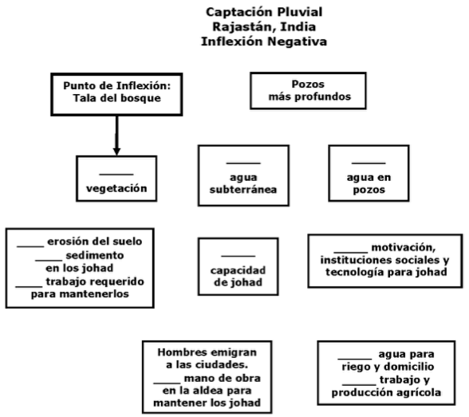
Diagrama a ser completado por estudiantes. Complete los recuadros escribiendo “mayor” o “mas” para indicar un aumento durante el periodo de restauración de la historia, y “menor” o “menos” para indicar una disminución durante el mismo periodo. Trace flechas entre los recuadros para demostrar los efectos entre factores que causaban el aumento o disminución. Debe haber por lo menos una flecha partiendo de cada cuadro y por lo menos una apuntando a cada cuadro. Finalmente, dibuje los patrones circulares de las flechas, que representan los “círculos virtuosos” detonados por el punto de inflexión positiva y que impulsan la restauración.
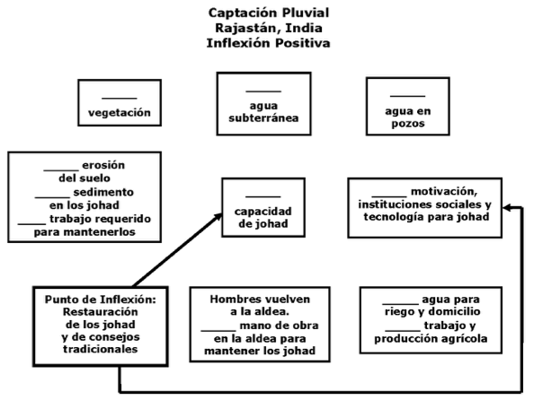
9. Diagramas de Retroalimentación (para Maestros)
El punto de inflexión negativa en esta historia fueron las concesiones de derechos de tala comercial otorgados por los rajas poco antes de la independencia de la India. La resultante cascada de efectos puso en marcha un sistema de círculos viciosos:
- La tala comercial redujo la cantidad de vegetación y su protección contra la erosión. La erosión incrementó y con ella la sedimentación dentro de los johad, reduciendo su capacidad de regresar agua al manto acuífero. Con menos agua filtrada, el manto acuífero cayó y se profundizó lentamente. Los árboles y demás vegetación al retirarse el agua más allá del alcance de sus raíces. La pérdida de vegetación causó aun más erosión y sedimentación.
- Los residentes compensaron la caída del manto acuífero utilizando las nuevas tecnologías para perforar pozos a mayor profundidad. Eso agotó aún más al manto acuífero, obligándoles a perforar cada vez a mayor profundidad.
- El mantenimiento de los johad requiere mucha mano de obra. Esto, junto con el hecho de que el abasto de aguas se había trasladado a pozos cada vez más profundos, redujo la motivación de los aldeanos por mantener sus johad. Al caer en el olvido, se perdieron los johad junto con las instituciones sociales y la tecnología que les daban mantenimiento.
- Eventualmente el acuífero se retiró tanto que ni el pozo más profundo producía agua. No había agua para irrigar los cultivos durante la temporada seca. Los hombres se mudaron a las ciudades en busca de empleos, llevándose la mano de obra necesaria para el mantenimiento de los johad. Esto aceleró aún más el deterioro de los johad y el agotamiento del acuífero.
- Como demuestra el diagrama de la “inflexión negativa”, los cuatro círculos viciosos mencionados previamente estaban interconectados y se reforzaban entre sí. El resultado fue la desaparición de los johad y del abasto de agua y de los bosques. Las mujeres y niños sufrieron la pesadilla de caminar largas jornadas en busca de agua y leña. Los niños no tenían tiempo para la escuela, y las mujeres no podían atender otras responsabilidades familiares ni actividades económicas.
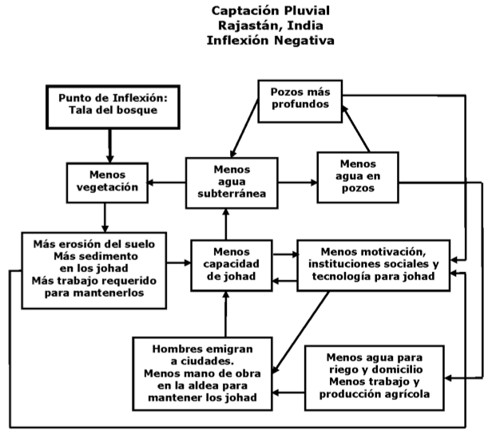
El punto de inflexión positiva fue la restauración de un solo johad en la aldea de Gopalpura, junto con la restauración del tradicional consejo gram sabah para su administración. La resultante cascada de efectos eliminó el primer círculo vicioso en la inflexión negativa (la perforación de pozos cada vez más profundos, porque el manto ahora subía en vez de bajar). Los otros tres círculos viciosos fueron revertidos, transformándolos en círculos virtuosos.
- El agua pronto regresó a los pozos y manantiales cercanos al johad, motivando a la construcción de más johad. La tecnología y las instituciones sociales para restaurar, mantener y construir nuevos johad evolucionaron al irse restaurando cada vez más johad.
- Subió el manto acuífero, restaurando más pozos y manantiales y permitiendo la irrigación agrícola. Regresaron los hombres de las ciudades, brindando la mano de obra necesaria para restaurar, construir y mantener más johad.
- Con la cercanía del agua subterránea a la superficie, los aldeanos plantaron árboles para restaurar su bosque. El bosque no solo brindó leña, sino que redujo la erosión, reduciendo la sedimentación en los johad y facilitando su mantenimiento.
- Los círculos virtuosos continuaron hasta que todos los pozos y manantiales volvieron a fluir y la aldea aseguró un abasto de agua sustentable. Las mujeres y niños no tuvieron que gastar horas buscando agua y leña. Los niños regresaron a la escuela y las mujeres pudieron atender más a sus familias y regresar a sus actividades económicas. Un nuevo círculo virtuoso se puso en marcha cuando otras aldeas se enteraron del éxito en Gopalpura y vinieron a presenciar lo ocurrido. Los johad se propagaron a cientos de aldeas.
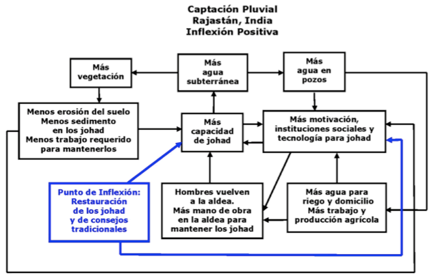
No se espera que los estudiantes produzcan diagramas idénticos a éstos. Mientras que la mayoría de las flechas son obvias, otras están sujetas a interpretación.
10. Vista Previa de PowerPoint de los Ingredientes para el Éxito
Toque la imagen para pausarla. Pulse para avanzar.
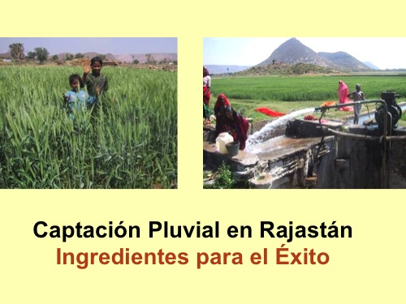
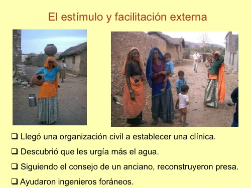
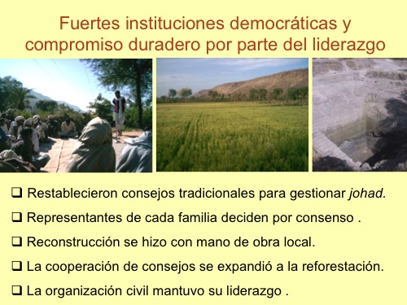
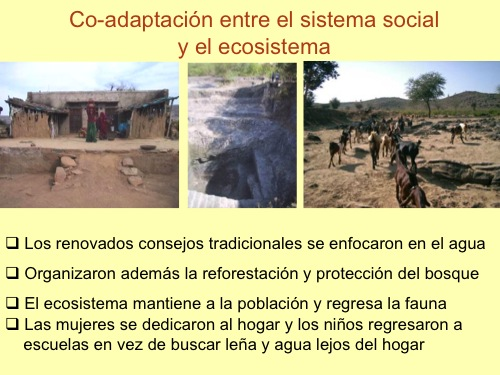
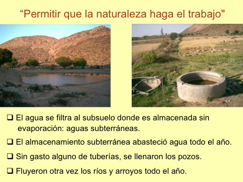
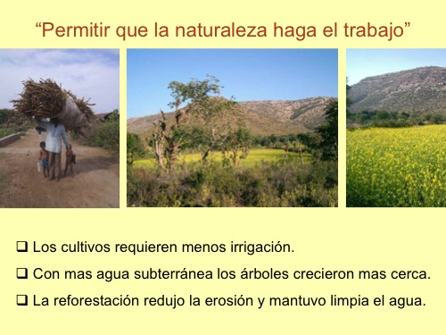
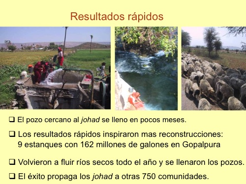
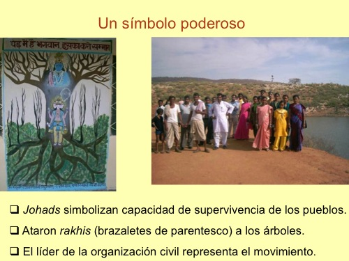
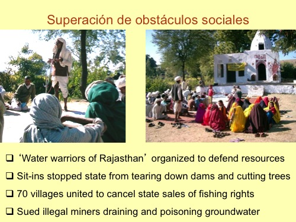
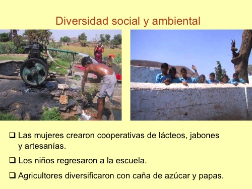
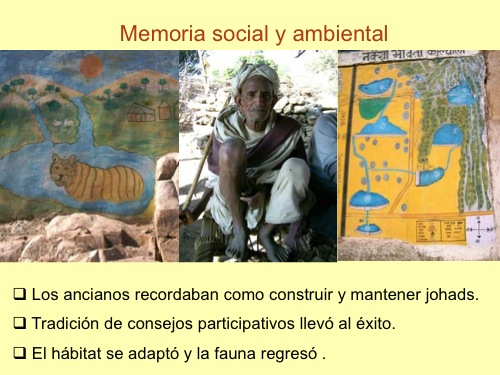
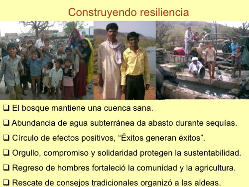
11. Vista Previa de PowerPoint para Estudiantes
Este archivo de PowerPoint contiene fotos que ilustran este caso. Maestros pueden utilizarlo par presentaciones acerca de este caso, y alumnos pueden utilizarlo para crear sus propias presentaciones, como descrito en Paso #10 de “Procedimiento Recomendado” en la parte superior de este página.
Toque la imagen para pausarla. Pulse para avanzar.
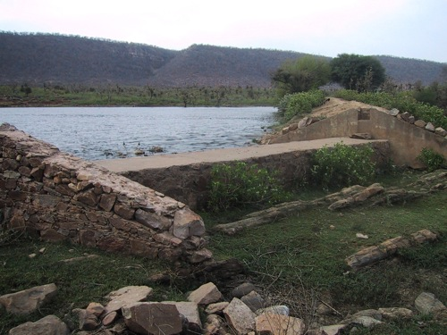
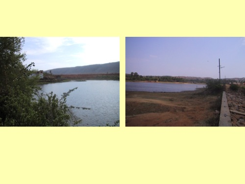
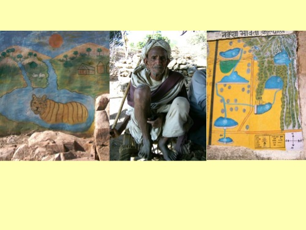
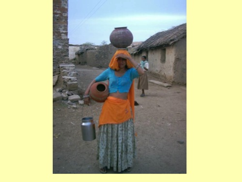
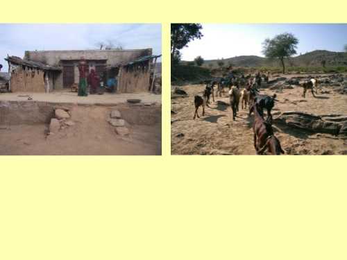
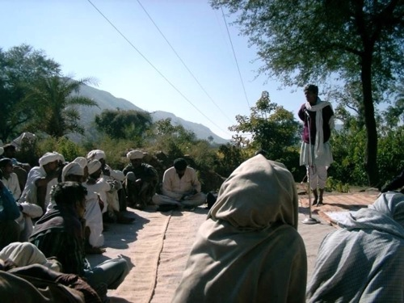
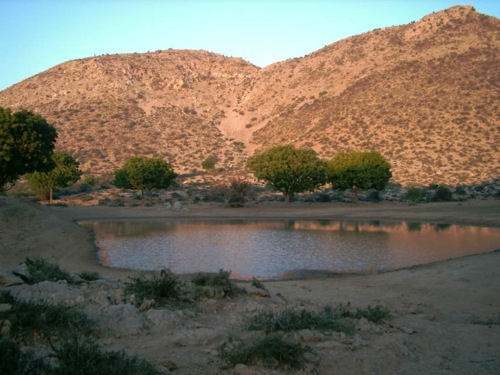
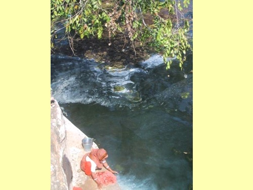
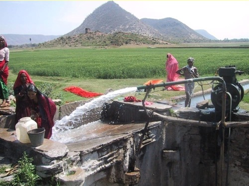
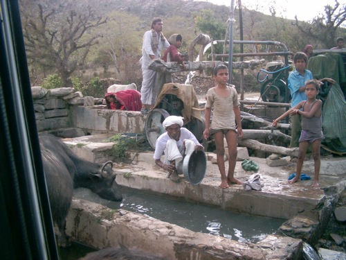
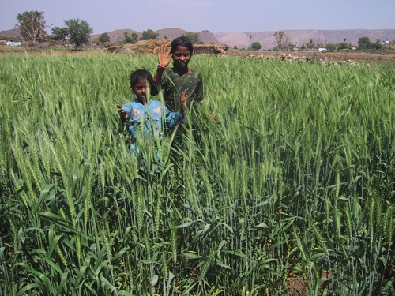
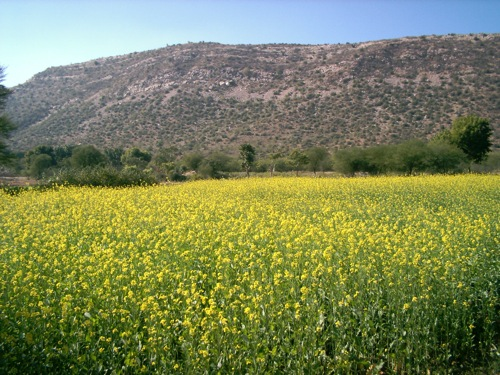
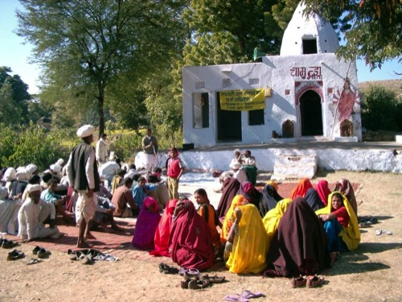
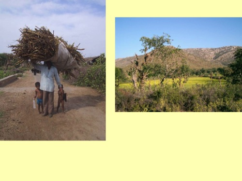
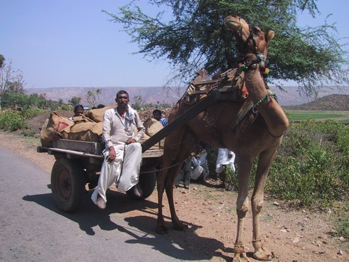
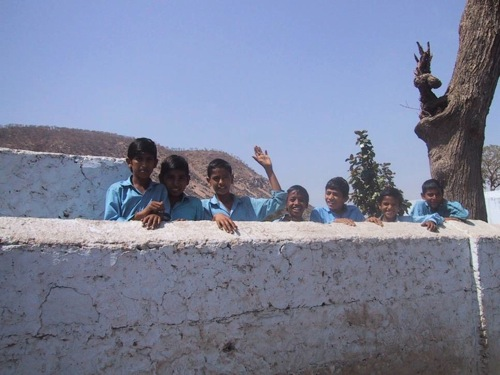
Descargue todos los materiales en ésta página
(Archivos Editables de Microsoft Word y PowerPoint - ZIP 9MB)
Este sitio web contiene materia traducida del sitio web www.ecotippingpoints.org.
Traducción: David Nuñez. Redacción: Gerry Marten